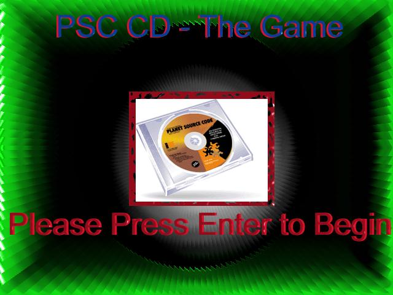
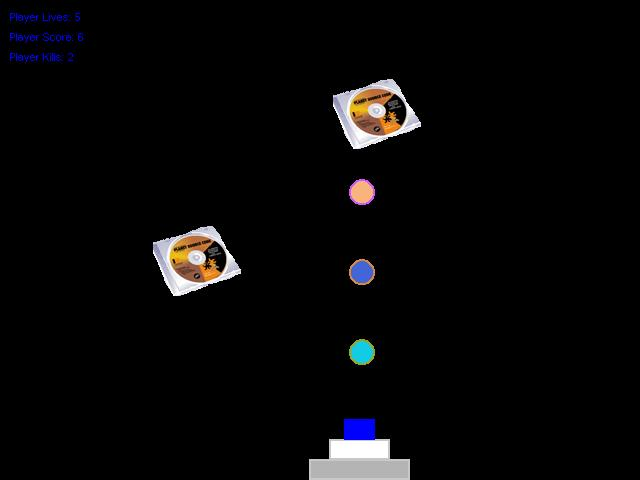

PSC CD Show down - the Game
About
PSC CD Show down is basicly a 2D game that I wrote in about 2 hours. Its a pretty simple game, and is based on a true story (lol). The games graphics arent to good, since its programmer art and it is sort of a joke game. Basicly you have your cannon located at the bottom of the screen. You can move the cannon left and right, and fire. PSC CD's start falling from the sky, and you must blast them, before they hit the bottom of the screen. If you destroy 20 + cd's within your 5 lives, the CD cost is lowered. If you dont then you die, and the CD is raised to $500 bucks a copy.
Controls
LEFT KEY - Move Left
RIGHT KEY - Move Right
SPACE - Fire
ESCAPE - Exit
Featured Screen Shots


LostSideDead